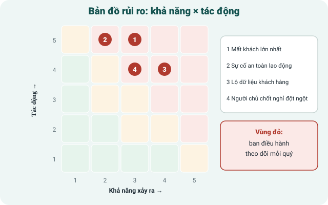

K10 · Năng lực số, AI và quy tắc nơi làm việc › Bậc 5 Dẫn dắt
Sổ rủi ro, trách nhiệm người quản lý và quản trị AI
Bài này làm Tờ 7: Sổ rủi ro và Danh mục AI. Mẫu in. Bài nối tiếp Biến quy định thành việc làm (N4) và Dẫn dắt thay đổi và AI (N5). Bài không tư vấn pháp lý; nguồn luật ghi ở cuối bài.
1. Mục tiêu
- Lập Sổ rủi ro 10 dòng, mỗi rủi ro có người chủ, biện pháp và ngưỡng cảnh báo.
- Lập Danh mục AI của tổ chức: hệ thống nào, dữ liệu gì, ai chịu trách nhiệm, con người kiểm tra ở đâu.
2. Khởi động truy xuất
- Ba bước khi nghe tin xấu là gì?
- Kênh tin xấu cần ghi rõ ba điều nào?
Đáp án
- Cảm ơn người báo; hỏi sự kiện; hỏi cần gì.
- Loại tin phải lên trong 48 giờ; tin đi qua ai; khi nào được báo vượt cấp.
Xem lại: Nghe tín hiệu yếu.
3. Giải thích
Ban điều hành không thể theo dõi mọi rủi ro. Nhưng phải biết 10 rủi ro lớn nhất, và mỗi rủi ro có người lo.
Viết rủi ro theo ba vế: nguyên nhân → sự kiện → hậu quả. "Rủi ro nhân sự" chưa đủ. "Hai kỹ sư chính nghỉ cùng lúc, nên dự án X trễ 3 tháng" mới dùng được.

Tờ 7. Mỗi dòng của Sổ rủi ro
- Rủi roNguyên nhân → sự kiện → hậu quả.
- ĐiểmKhả năng và tác động, từ 1 đến 5.
- Người chủMột người, có quyền hành động.
- Biện phápViệc đang làm để giảm rủi ro.
- Ngưỡng cảnh báoThấy gì thì báo ban điều hành ngay.
Ban điều hành xem sổ mỗi quý. Rủi ro vượt ngưỡng thì vào Kênh tin xấu của Bài 6.
Trách nhiệm của người quản lý. Luật Doanh nghiệp có điều riêng về trách nhiệm của người quản lý công ty. Với công ty cổ phần là Điều 165. Tóm lại: làm nhiệm vụ trung thực, cẩn trọng, vì lợi ích công ty. Không dùng địa vị, thông tin hay cơ hội của công ty để tư lợi. Thông báo cho công ty các lợi ích liên quan của mình.
Hiểu đơn giản: cẩn trọng nghĩa là có quy trình để biết và xử lý rủi ro lớn. Sổ rủi ro là một phần của quy trình đó. Muốn biết nghĩa vụ cụ thể, đọc văn bản gốc và hỏi pháp chế.
Danh mục AI. Nhiều tổ chức không biết mình đang dùng bao nhiêu công cụ AI. Mỗi dòng của danh mục ghi: tên hệ thống; dùng làm gì; dữ liệu đưa vào, có dữ liệu cá nhân không; ai chịu trách nhiệm; con người kiểm tra kết quả ở bước nào.
Luật Trí tuệ nhân tạo chia hệ thống AI theo ba mức rủi ro: cao, trung bình, thấp. Việc xếp mức cho từng hệ thống cần pháp chế và người phụ trách dữ liệu cùng làm.
4. Ví dụ tại nơi làm việc Việt Nam
Tình huống giả định. Một công ty cổ phần bán lẻ thời trang có 60 cửa hàng. Hội đồng quản trị hỏi: "Ban điều hành đang lo rủi ro gì?" Không ai trả lời giống ai.
Giám đốc điều hành, anh Tuấn, mời các giám đốc khối mỗi người viết 5 rủi ro theo ba vế. Ban gom lại, chấm điểm, chọn 10.
Một dòng trong sổ: Rủi ro: nhà cung cấp vải chính ở một tỉnh gặp lũ, nên thiếu hàng mùa Tết. Điểm: khả năng 3, tác động 5. Người chủ: giám đốc mua hàng. Biện pháp: thêm một nhà cung cấp ở vùng khác cho 30% lượng vải. Ngưỡng: tồn kho vải dưới 6 tuần bán hàng.
Khi lập Danh mục AI, ban phát hiện 3 công cụ. Phòng marketing dùng một công cụ viết nội dung. Chăm sóc khách hàng dùng chatbot. Một nhân viên phân tích tự dán dữ liệu khách hàng vào công cụ AI miễn phí.
Dòng thứ ba có dữ liệu cá nhân của khách. Anh Tuấn cho dừng ngay, và nhờ pháp chế xem xét theo Luật Bảo vệ dữ liệu cá nhân.
Vì sao cách này tốt: rủi ro viết cụ thể, có người chủ và ngưỡng. Danh mục AI phát hiện một rủi ro dữ liệu mà trước đó không ai biết.
5. Thực hành
Tình huống giả định. Bạn là tổng giám đốc một công ty logistics ở Hải Phòng. Công ty mới dùng AI để xếp tuyến xe và trả lời khách qua tổng đài.
Viết 2 dòng Sổ rủi ro theo Tờ 7. Viết 2 dòng Danh mục AI.
Gợi ý 1
Rủi ro của logistics thường liên quan đến tai nạn, trễ hàng cho khách lớn, và hệ thống ngừng chạy.
Gợi ý 2
Với AI trả lời khách: dữ liệu nào của khách được đưa vào? Khi AI trả lời sai, ai phát hiện?
Lời giải mẫu
Sổ rủi ro
- Tài xế chạy quá giờ, nên xảy ra tai nạn. Điểm 2/5. Chủ: giám đốc vận tải. Biện pháp: giới hạn giờ lái trên phần mềm. Ngưỡng: một tài xế vượt giới hạn 2 lần trong tháng.
- Hệ thống xếp tuyến ngừng chạy, nên trễ hàng cả ngày. Điểm 2/4. Chủ: giám đốc công nghệ. Biện pháp: có cách xếp tuyến thủ công dự phòng. Ngưỡng: hệ thống ngừng quá 2 giờ.
Danh mục AI
- AI xếp tuyến. Dữ liệu: địa chỉ giao, tải trọng, vị trí xe. Chủ: giám đốc vận tải. Kiểm tra: điều phối viên duyệt tuyến trước khi chạy.
- AI tổng đài. Dữ liệu: tên, số điện thoại, mã đơn của khách. Có dữ liệu cá nhân. Chủ: trưởng chăm sóc khách hàng. Kiểm tra: nhân viên nghe lại mẫu cuộc gọi mỗi tuần; khách luôn chuyển được sang người thật.
(Thông tin là giả định.)
6. Tự kiểm tra
Chọn đáp án. Mỗi lựa chọn đều có giải thích.
Câu 1. Dòng nào trong Sổ rủi ro được viết đúng ba vế?
-
Chưa đúng. Chỉ là tên nhóm. Không biết nguyên nhân, sự kiện hay hậu quả.
-
Đúng. Đúng. Có nguyên nhân, sự kiện và hậu quả. Người chủ rủi ro biết phải theo dõi gì.
-
Chưa đúng. Đây là một biện pháp, chưa phải mô tả rủi ro.
Câu 2. Một rủi ro trong sổ ghi người chủ là "Ban điều hành". Vấn đề là gì?
-
Chưa đúng. Khi cả ban cùng chủ, thường không ai thật sự theo dõi hằng ngày.
-
Đúng. Đúng. Mỗi rủi ro cần một người chịu trách nhiệm theo dõi và báo khi vượt ngưỡng.
-
Chưa đúng. Pháp chế góp ý về pháp lý. Người chủ rủi ro nên là người có quyền xử lý gốc vấn đề.
Câu 3. Khi lập Danh mục AI, bạn thấy nhân viên đưa hồ sơ ứng viên vào công cụ AI miễn phí. Nên làm gì trước?
-
Chưa đúng. Hồ sơ ứng viên có dữ liệu cá nhân. Đưa vào công cụ chưa được duyệt là rủi ro.
-
Đúng. Đúng. Dừng để chặn rủi ro, rồi xem xét theo quy định về dữ liệu cá nhân.
-
Chưa đúng. Có thể tổ chức chưa có quy tắc rõ. Trước hết hãy chặn rủi ro và đặt quy tắc.
Câu 4. Theo Luật Doanh nghiệp, người quản lý công ty cổ phần có nghĩa vụ nào?
-
Chưa đúng. Luật không quy định như vậy. Điều 165 nói về cách thực hiện nhiệm vụ, không hứa kết quả.
-
Đúng. Đúng. Đây là ý chính của Điều 165. Chi tiết cần đọc văn bản gốc.
-
Chưa đúng. Không đúng. Trách nhiệm cá nhân phát sinh khi vi phạm nghĩa vụ, theo quy định của luật.
7. Phản tư
- Nếu hội đồng quản trị hỏi "3 rủi ro lớn nhất là gì?", ban điều hành của bạn có trả lời giống nhau không?
- Bạn có biết hết các công cụ AI đang được dùng trong tổ chức không?
8. Áp dụng thật
Trong 7 ngày tới, nhờ mỗi trưởng khối viết 5 rủi ro theo ba vế. Gom lại thành Sổ rủi ro 10 dòng. Bắt đầu Danh mục AI bằng cách hỏi từng khối đang dùng công cụ nào.
Cập nhật lần cuối: 14/11/2026. Nguồn (tra cứu ngày 14/11/2026): Luật Doanh nghiệp số 59/2020/QH14, ban hành ngày 17/6/2020, hiệu lực từ 01/01/2021. Đã được sửa đổi bởi Luật số 03/2022/QH15 và Luật số 76/2025/QH15 (ban hành 17/6/2025, hiệu lực từ 01/7/2025). Còn hiệu lực. Điều 165 nêu trách nhiệm của người quản lý công ty cổ phần. Luật Trí tuệ nhân tạo số 134/2025/QH15, ban hành ngày 10/12/2025, hiệu lực từ 01/3/2026. Luật Bảo vệ dữ liệu cá nhân số 91/2025/QH15, Quốc hội thông qua ngày 26/6/2025, hiệu lực từ 01/01/2026. Bài chỉ tóm tắt ý chính, không diễn giải chi tiết điều khoản. Khi áp dụng, đọc văn bản hợp nhất mới nhất và hỏi pháp chế.
9. Siêu dữ liệu
| skill | K10 · Năng lực số, AI và quy tắc nơi làm việc |
|---|---|
| level | Bậc 5 · Dẫn dắt |
| group | N6 |
| framework_map | APS Integrated Leadership System: Exemplifies personal drive and integrity; DigComp 3.0; WEF: AI and big data; Technological literacy; SkillsFuture CCS: Digital Fluency; CSfW: 1b Work with roles, rights and protocols (chỉ dẫn chiếu) |
| updated | 2026-11-14 |
Hoàn thành bài
Đánh dấu đã học để site gợi ý lịch ôn sau 1, 3 và 7 ngày. Dữ liệu chỉ lưu trên máy của bạn.
Lịch ôn gợi ý: